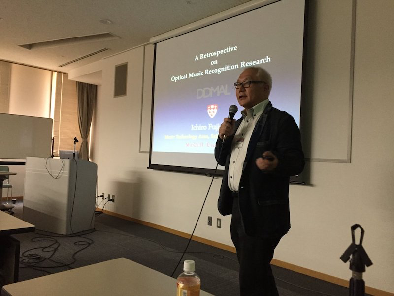
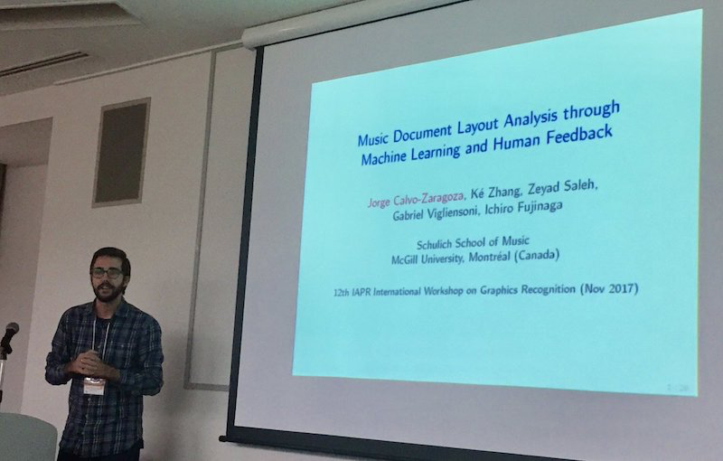
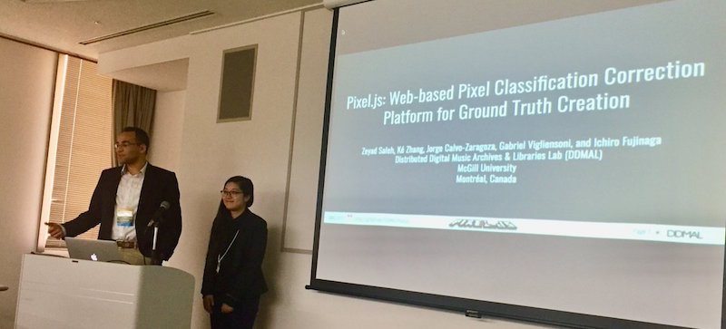
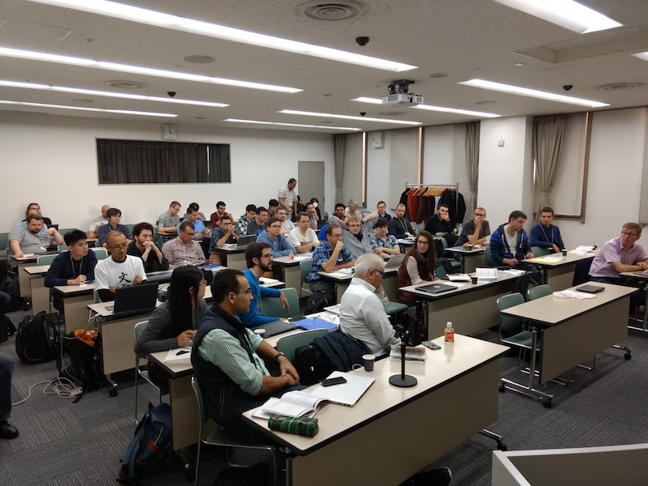

Tackling OMR in Kyoto: SIMSSA at GREC 2017
Posted by ehopkins on November 22, 2017
Earlier this month, four SIMSSA Participants visited Kyoto for the 12th IAPR International Workshop on Graphics Recognition (GREC 2017). This conference was held in conjunction with the International Conference on Document Analysis and Recognition (ICDAR, in its 14th edition).
Project Director Ichiro Fujinaga was the IAPR invited speaker, and gave a talk on the history of OMR titled “A Retrospective on Optical Music Recognition Research”, detailing the history of OMR since the 1960s.

SIMSSA Postdoc Jorge Calvo-Zaragoza presented some recent work, co-authored with Ké Zhang, Zeyad Saleh, Gabriel Vigliensoni, and Ichiro Fujinaga: Music Document Layout Analysis through Machine Learning and Human Feedback.

Finally, we were very proud to send two of the undergraduates we hired last summer! You might remember Ké and Zeyad from this post last May, when they were just getting started on Pixel.js. Here they are below, demonstrating their tool for ground truth creation in a presentation titled Pixel.js: Web-based Pixel Classification Correction Platform for Ground Truth Creation.

As it turns out, OMR is actually one of the more challenging tasks for document analysis, so there was a lot of interest in the subject. Our researchers were able to participate in a large group disucssion on the challenges of OMR held as part of the conference, shown below (image courtesy of @Grec2017)

Our main goal with SIMSSA involves making musical scores searchable through OMR but it’s exciting to be able to contribute to other fields along the way – Thanks to everyone at GREC and also to our researchers for all their hard work!